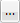
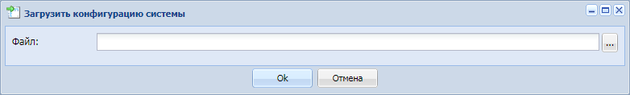
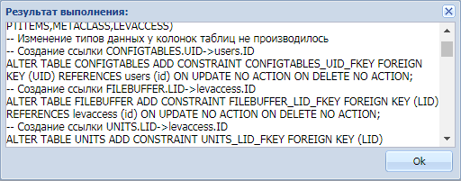
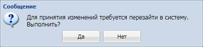

|
<< Click to Display Table of Contents >> 2.1 Раздел Файл |
  
|
|
<< Click to Display Table of Contents >> 2.1 Раздел Файл |
|
Раздел «Файл» содержит в себе следующие меню:
Меню «Загрузить конфигурацию»;
Меню «Выгрузить конфигурацию»;
Меню «Загруженные файлы»;
Меню «Выйти».
Загрузить конфигурацию
Данный пункт предназначен для загрузки конфигурации веб-сервиса Vega Plus.
Для загрузки модуля, выбрать раздел «Файл» и нажать на меню «Загрузить конфигурацию». Откроется форма для загрузки конфигурации (Рисунок 3). Для загрузки модуля нажать на кнопку , откроется проводник Windows для выбора загружаемого файла, выбрав конфигурацию, нажать на кнопку «ОК».

Рисунок 3 - Форма загрузки конфигурации
После загрузки модуля, откроется информационное окно с изменениями в веб-сервисе (Рисунок 4), ознакомившись с информационным окном нажать кнопку «ОК».

Рисунок 4 - Информационное окно
Для принятия изменений в веб-сервисе, повторно зайти в веб-сервис (Рисунок 5).

Рисунок 5 - Требование системы о перезагрузке
Выгрузить конфигурацию
Меню «Выгрузить конфигурацию» выгружает конфигурацию веб-сервиса Vega Plus в формате *.xml для редактирования внесений изменений.
Важно! Для редактирования файлов конфигурации необходимо знать язык разметки xml.
Для выгрузки конфигурации выбрать раздел «Файл» и нажать на меню «Выгрузить конфигурацию». Выгрузка конфигурации осуществится по пути: C:\Users\«Имя пользователя»\Загрузки).
Выйти
При нажатии меню «Выйти» Система осуществит выход пользователя из модуля, на экране отображено окну авторизации (Рисунок 1).